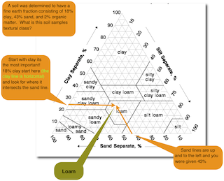

Texture class is an expression, based on the United States Department of Agriculture (USDA) system of particle sizes, for the relative portions of the various size separates (of individual mineral soil grains) of the fine earth fraction (less than 2 mm equivalent diameter) in a mass of soil.
Textural class, often shortened to simply texture, refers to the proportion of the size separate groupings sand, silt, and clay in the inorganic fine earth soil fraction < 2-mm in diameter. For a treatment on size separates see that page here.
sand% + silt% + clay% = 100%
Texture can not be changed, except at great expense (example: adding sand to your garden). Adding mulch or compost has no affect on the texture because organic matter is ignored as it is not mineral soil separate solids. That is not to discount the addition of organic matter. For a treatment on organic matter see that page here
✓ The percentages of sand, silt, and clay are for the mass of the mineral separates as a percentage of the total mass of the mineral fine earth fraction.
Table -- Generalized ratings associated with soil separates on some properties and behavior of soils†
Rating
Sand
Silt
Clay
Water-holding capacity
low
medium to high
high
Aeration
good
medium
poor
Drainage rate
high
slow to medium
very slow
Soil organic matter level
low
medium to high
high to medium
Decomposition of organic matter
rapid
medium
slow
Compactability
low
medium
high
Susceptibility to wind erosion
moderate; high if fine sand
high
low
Susceptibility to water erosion
low unless fine sand
high
low if aggregated; high if not
Shrink swell potential
very low
low
moderate to very high
Sealing of ponds, dams, and landfills
poor
poor
good
Suitability for tillage after rain
good
medium
poor
Pollutant leaching potential
high
medium
poor
Ability to store plant nutrients
poor
medium to high
high
Resistance to pH change
low
medium
high
Warm-up in spring
rapid
moderate
slow
† Exceptions to these generalizations do occur, especially as a result of soil structure and clay mineralogy.
Soil Textural Classes
The United States Department of Agriculture (USDA) groups the particle-size distributions into three, five, and twelve classes. All the various particle-sized distributions can be grouped into three classes; sandy, loamy, and clayey. Sandy in the three class system is the course class in the five class system which is sand and loamy sand in the twelve class system.
The loamy class in the three class system is divided into moderately course, medium, and moderately fine in the five class system. Moderately course is sandy loam in the twelve class system and medium in five class system is further separated into loam, silt loam, and silt in the twelve class system. The five class system moderately fine class is further separated into the clay loam, sandy clay loam, and silty clay loam in the twelve class system. Clayey in the three class system is fine in the five class system but is further separated into clay, sandy clay, and silty clay in the twelve class system.
There are essentially three methods to determine the relative fractions of sand, silt, and clay to properly place the soil into a textural class. The are laser granulometer, gravity sedimentation, and texture–by–feel (or apparent texture).
Field method “texture-by-feel method” or apparent texture is guided by tactile perceptions where sand feels gritty, silt feels smooth or floury and clay feels sticky and or stiff. With practice individuals can become quite adept at determine the textural class accurately using texture-by-feel. No real gold standard specific methodology exists for texture-by-feel, but a suggested flow chart was authored by Thein (1979[1]) and a modified version is presented below. The challenge is to be consistent and attempt to ignore organic matters influence on the way the soil feels.
The gold standard for measuring size separates is a laboratory procedure separating silts and clays by sedimentation and sieving to separate the sand. The separates are weighed, their percentages are determined, and then the textural class is determined. The textural class is represented on a ternary plot often referred to as a texture triangle. The USDA textural classes are laid out on the textural triangle (below).
Example: Consider a soil that was determined to have a fine earth fraction consisting of 18% clay, 43% sand, and 2% organic matter. First, determine the textural class from the percent mass of size separates that comprise the fine earth fraction. Second, determine the soil samples textural class?

Soil Textural Triangle with vector lines for sand, silt, and clay intersecting for textural Class Determination. For a larger version.
Notice that in our sample we did not need to have the silt percentage. Why?
The sand, silt, and clay must add up to 100%. If two of the three are known the textural class can be determined. Also, organic matter is ignored for textural class. Organic soils have a different determination scheme.
Using the diagrams example, practice determining the textural class for the percents mass of the following size separates:
Soil
Sand (%)
Silt (%)
Clay (%)
Textural Class
a
10
20
70
b
68
10
22
c
35
30
35
d
40
40
20
e
8
42
50
f
55
5
40
Texture is one of the measurements that allow someone with some knowledge about soils to infer many properties and/or behaviors of soils. The following table is some of the ways that differences in soil texture is generalized to infer soil properties or behavior.
Some More General Guidelines for Texture-by-Feel Method
Sand and loamy sand: Individual grains easily seen and felt. When squeezed moist, forms a cast that crumbles when touched or jostled in the palm.
Sandy loam: When squeezed moist, forms a cast that can be gently handled. When squeezed between thumb and forefinger, will not ribbon well but ribbons and ribbon is less than 2.5 cm in length.
Loam: Somewhat gritty feel but fairly smooth. When squeezed moist, forms a cast that can be freely handled without breaking. When squeezed between thumb and forefinger, ribbons but ribbon is less than 2.5 cm in length.
Silty loam: Soft and floury when dry. Forms a cast when dry or moist. When squeezed between thumb and forefinger, will not ribbon well but does ribbon less than 2.5 cm in length. When moist and has a difficult time supporting its own weight.
Clay loam: Forms a ribbon 2.5 to 5 cm in length that barely sustains its own weight. Moist soil is plastic and forms a cast that can be handled.
Clay: Sticky and plastic when wet; forms a strong ribbon greater than 5 cm in length.
A loam textural class is one in which the sand, silt, and clay fractions have a similar influence on soil properties.
As stated above, the historical “gold standard” method for determining soil separates has been to utilize gravity sedimentation for fractionation of the size separates. Increasingly today laser granulometers are being employed to decrease the time to make these measurements. While in many instances the textures determined are similar this is not always true. There are literally hundreds of thousands of analysis on soils texture by the gravity sedimentation method. Based on this large database many technical and practical classifications and recommendations have been constructed. But how does gravity sedimentation work? It is based on Stokes’ Law presented below.
Stokes’ Law
Stokes’ Law is used to predict the settling times for various sized particles. Stokes’ law states that the rate which particles fall in a viscous medium (water in most cases) is governed by the radius of the particles and the force due to gravity. Spoiler alert: water viscosity changes with temperature!
Two basic instruments have been used to apply Stokes’ Law to soil texture.
The first is a special hydrometer, calibrated in terms of the grams of soil suspended, is used to measure density. The hydrometer is gently placed into the cylinder containing the suspension after predetermined periods of time and a reading taken by determining where the meniscus of the suspension strikes the hydrometer. The second is removing an aliquot of suspension after a particular size of particle –the size larger than the ones you wish to measure– has past a threshold depth. The second is considerably more accurate than the first, but takes slightly longer. It is the second, pipette method, that is the gold standard of our current database.
The rate of fall (v) of a particle in a suspension can be predicted from Stokes’ Law:
ν = 2r2(ρs -ρf)g / 9η equation 1
Where:
ν = velocity of particle falling in a liquid, centimeters per second (cm/sec)
r = radius of particles, in centimeters (cm)
ρs = density of the solid particles, about 2.65 grams per cubic centimeters (g/cm3)
ρf = density of the liquid, g/cm3
g = acceleration due to gravity, 980 centimeter per second per second (cm/sec2)
η = viscosity of the liquid, poises
From the definitions of the variables for the equation above if your a biologist who did not get their dose of physics in high-school you are likely to be a bit fuzzy, so they are defined below. Several definitions are offered below to hone in on the meaning of some of the terms.
poises: a unit of dynamic viscosity, such that a tangential force of one dyne per square centimeter causes a velocity change of one centimeter per second between two parallel planes separated by one centimeter in a liquid.
dyne: a unit of force that, acting on a mass of one gram, increases its velocity by one centimeter per second every second along the direction that it acts.
viscosity: the state of being thick, sticky, and semifluid in consistency, due to internal friction. A quantity expressing the magnitude of internal friction, as measured by the force per unit area resisting a flow in which parallel layers unit distance apart have unit speed relative to one another.
tangential: of, relating to, or along a tangent.
tangent: a straight line or plane that touches a curve or curved surface at a point, but if extended does not cross it at that point.
force: an influence tending to change the motion of a body or produce motion or stress in a stationary body. The magnitude of such an influence is often calculated by multiplying the mass of the body by its acceleration.
Finally, a little refresher of Greek letters. Most classic scientist of the past knew all of the Greek letters and had an appreciable grasp of Latin as well. Unfortunately, the learner of today is typically seriously deficient in comparison to their scientific forbearers. This author was also less than a master of Greek letters. Nevertheless, we solder on and learn them now.
ρ is the greek letter rho
η is the greek letter eta
ν is the greek letter nu
Manipulating the Stokes’ Law Equation to Suit Several Needs
Stokes’ Law Equation can be rearranged algebraically to isolate the unknown. A brief review of the principles of this fundamental equation is presented in the following.
The volume of a sphere is 4/3πr3 where r is the radius. The downward force (FD) acting on the sphere who’s solid (or particle) density is ρs; π is the constant pie, and the fluid density is ρf; is due to the acceleration of gravity (g) and is given by the equation
FD = (4/3)πr3(ρs - ρf)g
equation 2
Friction (FF) resists the downward force, according to
FF = 6π ηrν
equation 3
Terminal velocity (νT) is achieved when gravitational and frictional forces are equal. The particle is no longer accelerating and falls at a constant terminal velocity (νT):
(4/3)πr3(ρs - ρf) = 6πηrν
equation 4
Next, a few algebra rules are applied. Divide both sides of the equation by 2, and then multiply both sides by 3; followed by dividing both sides by π; and then divide both sides by r:
2r2(ρs - ρf) = 9ην
equation 5
Since 2r (or twice the radius) is the diameter (d), I choose to reduce my writing and apply d:
d2g(ρs - ρf) = 9ην
equation 6
dividing through by 9η gives us terminal velocity (νT):
d2g(ρs - ρf) / 9η = νT
equation 7
As interesting as equation 7 might be, the real utility is determining how long it takes for a particle of a know diameter (d) to fall a particular height (h). This is useful to know when a particular particle size no longer is influencing the density of the suspension in the hydrometer reading of our first method, or predicting how long it takes for particles to fall below a specific depth in our second determination so that we may take an aliquot from the suspension to weight it - and determine, for instance, the clay size particles remaining in suspension.
Since velocity is distance per time and we are interested how long it will take for particles greater than a prescribed diameter to fall below a prescribed distance of height:
νT = h / t equation 8
Where t is time and h is height. We substitute this relationship into equation 7:
d2g(ρs - ρf) / 9η = h / t equation 9
Again using algebra rules we rearrange the equation 9 to rapidly calculate time:
t = 9ηh / d2g(ρs - ρf) equation 10
We can similarly rearrange using algebra rules to derive the diameter of particles that have fallen past a given height using:
d = √(9ηh / tg(ρs - ρf) equation 11
Because viscosity of water changes with temperature the time of clay or silt to fall below a particular depth decreases with increasing temperature.
[Thein, S. J. 1979. A flow diagram for teaching texture-by-feel analysis. J. Aaron. Edu. 8:54–55.] ↩
Reference
Singer, M.J. and Munns, D.N. 2006. Soils: An Introduction. 6th edition. Pearson- Prentice Hall, New Jersey.
Bouyoucos G.J. 1962. Hydrometer method improved for making particle size analysis of soil. Agron. J., 54:464–465.